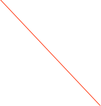

Sync Center


Many experiments need to keep track of the experts that are on call. If you have multiple machines, i.e. one or more DAQ machines, Slow Controls, etc -- then the problem of synchronizing all the lists can be difficult. This object allows you have one list that is automatically sent to a list of other machines.
This is not an smart sync. The remote lists will first be deleted completely and then updated with the lists from the machine hosting the Sync Center. Warning -- don’t use this on multiple machines pointing to each other.
The highlights of the dialog are shown below.
Add/remove an entry in the list

Manually sync at any time. Normal an automatic sync will be started within 30 seconds of editing the on-call list or the list of contacts in the Alarm object.
Drag the On-Call object here
Put a Remote Socket object here
You can exclude either of the syncs
Sync status will be dynamically displayed here